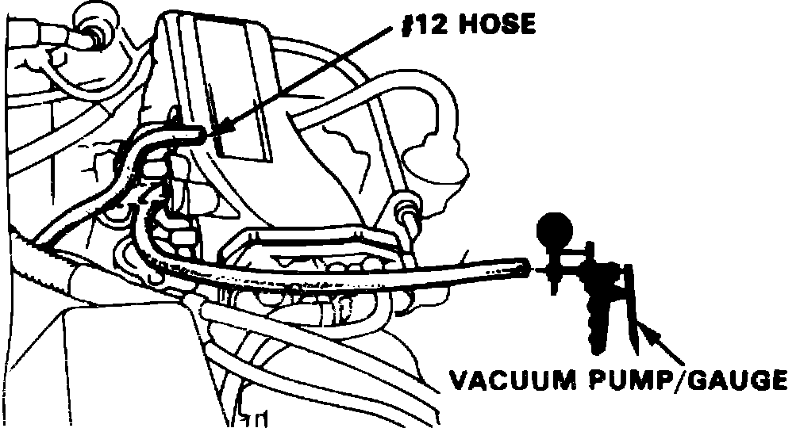
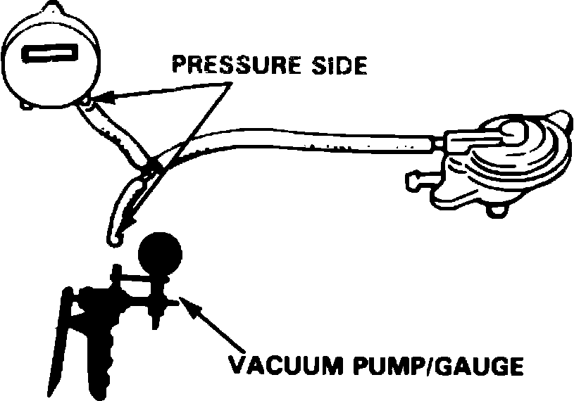

Canister Purge Solenoid: Testing and Inspection
Fig. 6 No. 12 Vacuum Hose Location:

Fig. 7 6 Pin Connector Location And Terminal Identification:

Perform the following test with coolant temperature below 149°F, unless otherwise specified.
1. Start engine, disconnect No. 12 vacuum hose from intake manifold, Fig. 6, and check for vacuum with suitable vacuum gauge. Vacuum should be evident. If vacuum is not evident, check vacuum port.
2. Disconnect 6 pin connector in engine compartment, then connect positive lead of voltmeter to black/yellow wire terminal and negative lead to red/white wire terminal, Fig. 7, and observe voltmeter.
3. If voltage is evident, replace solenoid valve and repeat test. If no voltage is present, connect positive lead of voltmeter to black/yellow wire terminal and negative lead to body ground and observe voltmeter. If no voltage is evident, repair open in black/yellow wire between solenoid valve and No. 4 fuse. If voltage is present, check for open in red/white wire between solenoid valve and ECU and repair as necessary. If wire is OK, check ECU for proper operation.
4. Start engine and allow to reach normal operating temperature (cooling fan cycling), then shut engine Off.
5. Disconnect 6 pin connector in engine compartment, then connect positive lead of voltmeter to black/yellow wire terminal and negative lead to red/white wire terminal, Fig. 7, and observe voltmeter 5 seconds after starting engine.
6. If voltage is evident in previous step, check for short in red/white wire between solenoid valve and ECU and repair as necessary. If wire is OK, check ECU for proper operation. If no voltage is present, replace solenoid valve and repeat test.